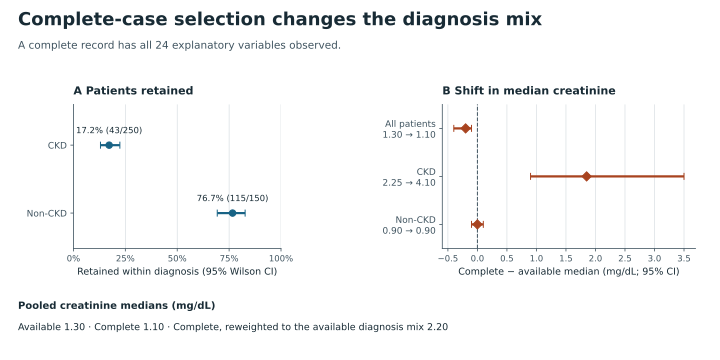
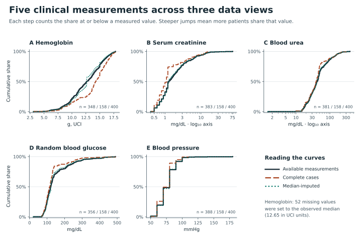
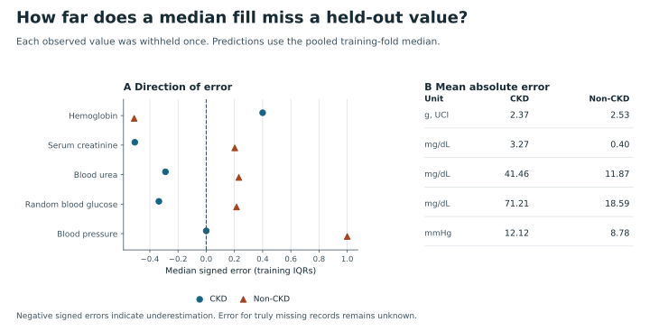
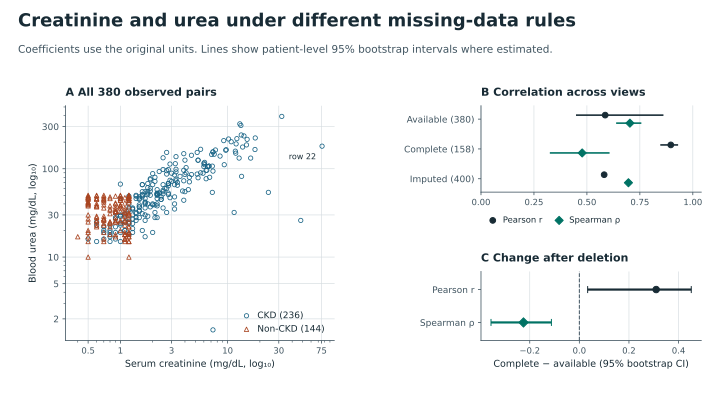
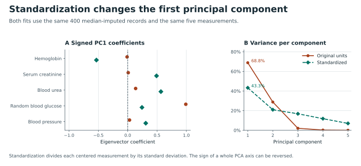

哪些患者被留下？
在这 400 条慢性肾病研究记录中，要求所有字段齐全会优先留下非 CKD 患者。总体肌酐看起来下降了，而在留下来的 CKD 患者中，肌酐反而更高。用一个全体中位数填补时，两组的误差也朝相反方向。
一、总体肌酐为何在删行后下降？
完整病例要求 24 个解释变量全部有记录。CKD 患者仅留下 43/250 人（17.2%），非 CKD 患者留下 115/150 人（76.7%）。两组保留率之差为 −59.5 个百分点，95% CI [−66.8, −50.5]，双侧 Fisher 精确检验 p < .001。400 人里有 62.5% 属于 CKD，留下的 158 人里只有 27.2%。缺失最多的字段是红细胞评估（152/400），其次是红细胞计数（131/400）和白细胞计数（106/400）。
要分清两种变化，可以做一个重新加权的比较。383 人有肌酐实测值，其中 238 人（62.1%）属于 CKD。保留 158 个完整病例及其每一个原始读数，只调整它们的权重，使 CKD 在合并分布中重新占 62.1%，再求中位数。
| 使用的读数与构成 | 患者数 | CKD 权重占比 | 中位数 |
|---|---|---|---|
| 所有有肌酐实测值的患者 | 383 | 62.1% | 1.30 |
| 完整病例，恢复实测人群的组别比例 | 158 | 62.1% | 2.20 |
| 完整病例，按实际人数 | 158 | 27.2% | 1.10 |
沿这条路径，在相同组别比例下换用完整病例的读数，中位数上升 0.90 mg/dL（95% CI [0.30, 1.90]）。再换成完整病例的实际比例，中位数下降 1.10 mg/dL（95% CI [−2.10, −0.60]）。两步合计 −0.20 mg/dL。CKD 组内，中位数从 2.25 升至 4.10；非 CKD 组内均为 0.90。这是对本样本的描述性分解，分组权重只能校正诊断比例；未记录的肌酐仍然未知。

二、同一个填补值，会怎样错估两个组？
血红蛋白的 348 个实测值中，没有人恰好等于全体中位数 12.65；补齐的 52 项全部落在这一点，形成占 400 人 13.0% 的台阶。三种数据处理方式的分布可直接对照。

为了量化填补误差，把 400 人按诊断分成五折。每次用四折患者的实测值求一个全体中位数，用它预测留出一折的已知读数；每名患者只进入一次验证集。诊断用于平衡各折构成，填补值的估算不使用诊断。下表的有符号误差为填补值减去实测值；正值代表填高，负值代表填低。
| 指标 | CKD / 非 CKD 实测数 | CKD 中位误差 | 非 CKD 中位误差 | 平均绝对误差 CKD / 非 CKD |
|---|---|---|---|---|
| 血红蛋白（UCI 记为 gms） | 204 / 144 | +1.80 | −2.40 | 2.37 / 2.53 |
| 肌酐（mg/dL） | 238 / 145 | −1.00 | +0.40 | 3.27 / 0.40 |
| 血尿素（mg/dL） | 237 / 144 | −12.00 | +8.50 | 41.46 / 11.87 |
| 随机血糖（mg/dL） | 212 / 144 | −22.00 | +13.75 | 71.21 / 18.59 |
| 血压（mmHg） | 240 / 148 | 0.00 | +10.00 | 12.12 / 8.78 |
把两组合在一起，肌酐的有符号误差中位数恰好为 0，平均绝对误差仍有 2.18 mg/dL。CKD 组有肌酐实测值的患者中，填补普遍偏低；非 CKD 组偏高。验证衡量这些已测患者在这次划分下的误差。真正缺失的 17 个肌酐读数没有可供核对的真值，缺失原因也可能与随机遮盖不同。

三、哪些肾指标关系经得起敏感性检查？
肌酐和血尿素同时有实测值的有 380 人。Pearson 衡量原单位下的线性关系，Spearman 衡量两个指标排序的一致程度。筛到 158 个完整病例后，这两项结果朝不同方向变化。
| 系数 | 实测配对（380） | 完整病例（158） | 单次填补（400） | 变化及区间 |
|---|---|---|---|---|
| Pearson r | 0.586 | 0.896 | 0.582 | +0.310 [0.033, 0.451] |
| Spearman ρ | 0.703 | 0.478 | 0.696 | −0.225 [−0.356, −0.113] |
CKD 组的 236 个实测配对中，Spearman ρ = 0.840 [0.771, 0.892]；非 CKD 组的 144 对中，ρ = −0.096 [−0.273, 0.077]，该组的肌酐实测范围仅为 0.6–1.2 mg/dL。分别在组内比较实测与完整病例时，秩相关的变化为 +0.018 和 −0.010，各自区间都跨过零。总体的 −0.225 掩盖了这种分组差异。
将 380 个配对逐一暂时拿掉并重算，影响 Pearson 最大的是源数据第 22 条记录（肌酐 76、血尿素 180 mg/dL）。暂时去掉它后，r 从 0.586 升到 0.674，ρ 从 0.703 变为 0.701。主结果保留了这条记录。肌酐实测分布的偏度为 7.51，对同样的 383 个值取自然对数后为 1.03。

把量纲换掉，第一主成分也会改变
固定同一批 400 人、同一套中位数填补值和五个指标，只改变进入主成分分析（PCA）的尺度。原单位下，第一主成分（PC1）解释 68.8% 的方差，随机血糖的方向系数为 +0.990。各指标分别减均值、除以标准差后，PC1 解释 43.3%，其绝对系数最大的三项为血尿素（+0.566）、血红蛋白（−0.534）和肌酐（+0.491）。方向整体翻转与原解等价；系数说明变量如何共同变化，不能当作疾病风险权重。

数据、方法与复核
这是一项已有探索结果基础上的再分析。研究对象是 UCI CKD 的全部 400 条患者记录，按每行一名患者计算。诊断标签仅用于分组。数值缺失按全体实测中位数、类别缺失按众数填补；留出验证则逐折重新求中位数。原始观测视角对每个指标或指标对使用当时可用的记录。本次从原始 CSV 重跑的 15 张原版结果表与仓库发布版本数值一致。
保留率按组给 Wilson 区间，两组差值给 Newcombe 区间；保留与诊断的关联使用一次双侧 Fisher 精确检验（样本优势比 0.063，p = 6.65 × 10−33）。中位数、相关系数及其差值使用 5,000 次患者级分层 bootstrap，固定 CKD/非 CKD 人数，每次对同一批抽到的患者计算两个视角，以第 2.5 和 97.5 百分位为端点。重新加权的区间每次重估组别权重。区间均为逐项 95% 区间，未作同时覆盖校正。填补后的描述量与五折验证误差按观测结果报告。
统计推断把患者记录视为相互独立；数据未提供可用于核对重复就诊或聚类的标识。按组检查了样本量、缺失、均值、标准差、四分位距、Tukey 围栏及偏度，并以 Shapiro–Wilk 和中位数中心 Levene 作分布诊断。右偏且全为正值的指标另看自然对数分布。所有原始观测均保留。本样本的保留差、组别构成和相关性依赖于记录方式，不能给出人群患病率、缺失机制或因果效应。